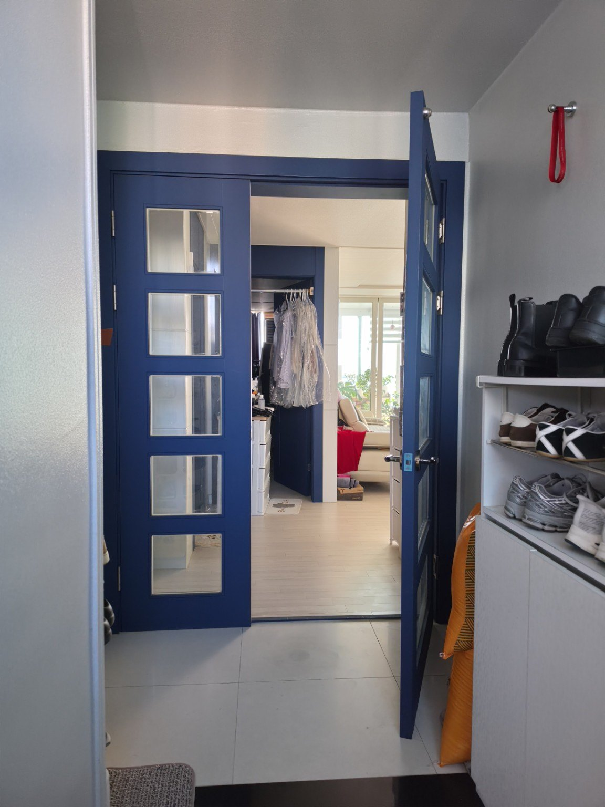
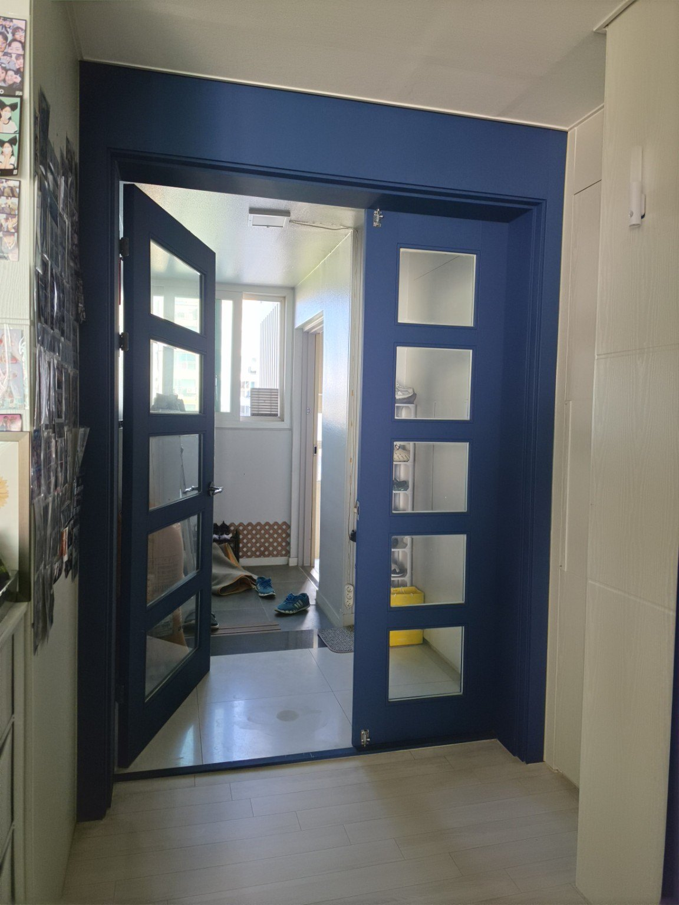
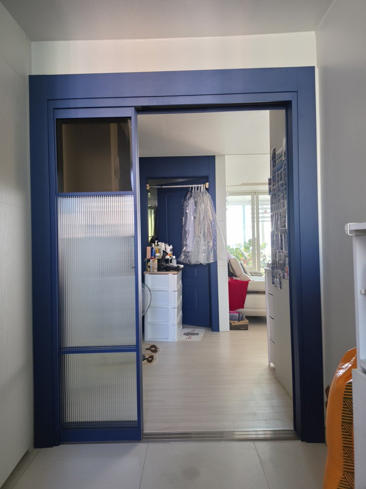
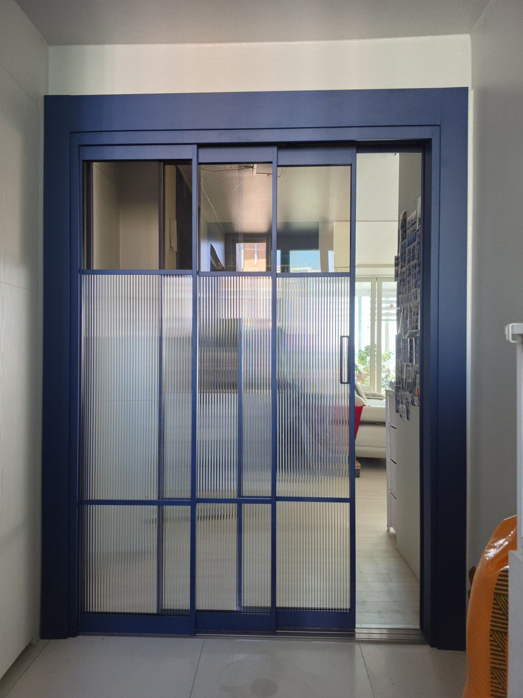
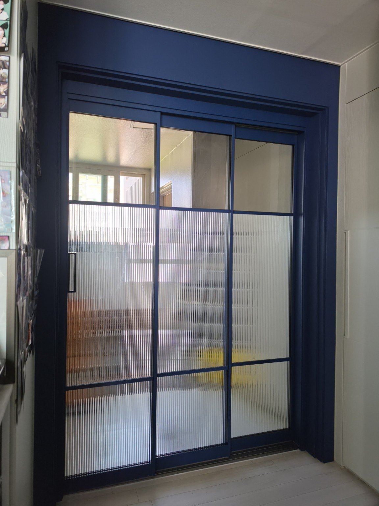
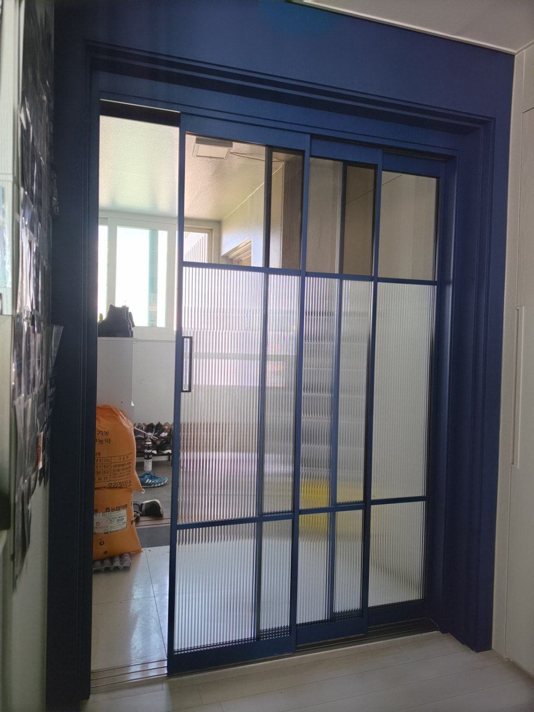
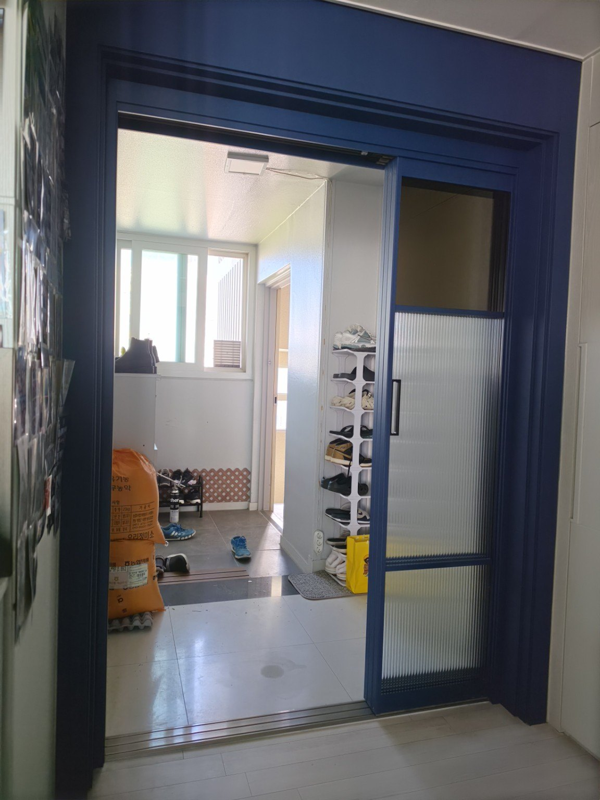

기안동 신일해피트리 112동 33평
비대칭 여닫이 철거 후 3연동 중문 교체
기존에 설치되어 있던 비대칭 여닫이 현관중문을 철거하고, 출입할 때 사용하기 편하도록 3연동 현관중문으로 교체한 시공사례입니다.
기존 여닫이 중문 철거
이번 현장은 기존 비대칭 여닫이 중문을 사용하고 있었지만, 실제 생활에서 문을 여닫고 출입하는 과정이 불편해 3연동 방식으로 교체했습니다. 기존 문과 프레임을 철거한 뒤 현관 구조에 맞춰 새 중문을 시공했습니다.
3연동 중문으로 사용 편의성 개선
3연동 중문은 여러 장의 문짝이 연동되어 움직이는 구조로, 여닫이문처럼 문짝이 회전하는 공간을 필요로 하지 않습니다. 이번 현장에서는 기존 여닫이 방식의 불편을 줄이는 것이 교체의 핵심이었습니다.
시공 사진








문다라 현관중문 교체 시공
문다라는 기존 중문을 무조건 그대로 사용하는 방식이 아니라 현관 구조와 실제 사용 방식을 확인해 여닫이, 연동 등 현장에 맞는 중문을 제작·시공합니다. 기존 중문 철거 후 교체 시공도 상담 가능합니다.
전화 상담 010-2432-1107기안동 신일해피트리 중문 교체 자주 묻는 질문
Q. 기존 여닫이 중문을 3연동 중문으로 교체할 수 있나요?
A. 현관 구조와 치수를 확인한 뒤 가능합니다. 이번 신일해피트리 33평 현장은 기존 비대칭 여닫이 중문을 철거하고 3연동 현관중문으로 교체했습니다.
Q. 여닫이 중문이 불편할 때 3연동으로 바꾸면 무엇이 달라지나요?
A. 여닫이문은 문짝이 회전하면서 열리기 때문에 개폐 공간이 필요합니다. 3연동 중문은 문짝이 옆으로 연동되어 움직여 이번 현장에서는 기존 여닫이 방식의 사용 불편을 줄이는 방향으로 교체했습니다.
Q. 기존 중문 철거와 새 중문 설치를 함께 할 수 있나요?
A. 가능합니다. 기존 문과 프레임 상태, 현관 구조를 확인한 뒤 철거와 새 중문 설치를 이어서 진행할 수 있습니다.
Q. 우리 집도 3연동 중문으로 교체할 수 있나요?
A. 현관 폭, 벽체와 문틀 구조, 기존 중문의 설치 상태를 확인해야 정확히 판단할 수 있습니다. 현관 사진과 기본 치수를 바탕으로 먼저 상담할 수 있습니다.